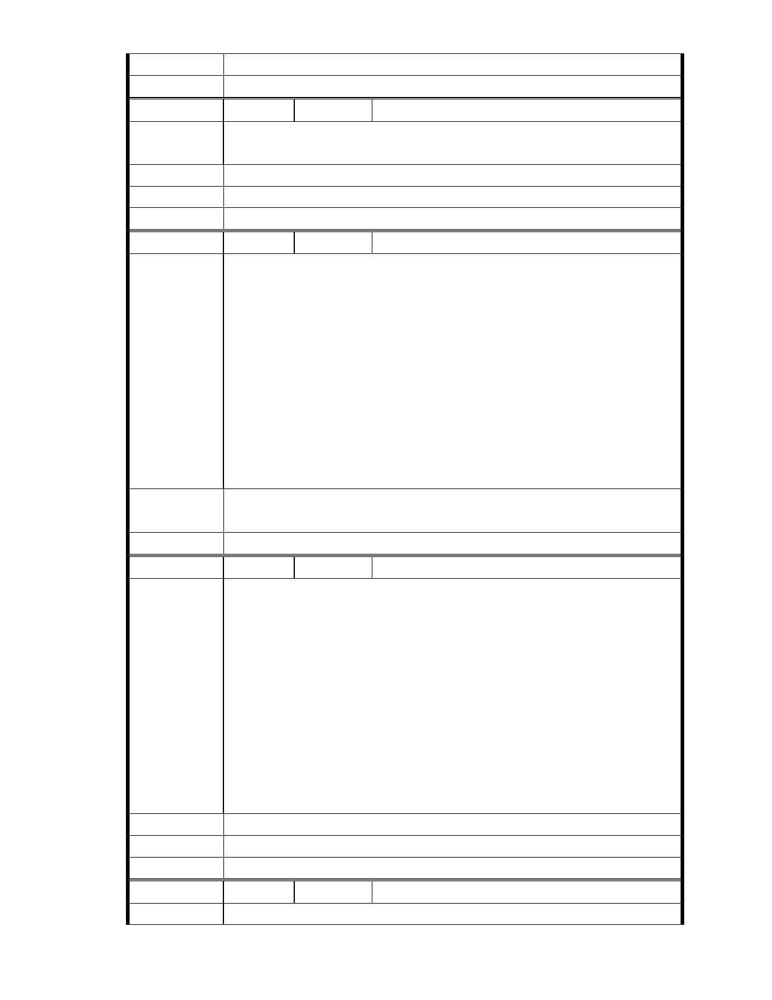

市 府 說 明 相關陳情意見將納入本案審查人民意見，依法定程序辦理。
委 員 會 決 議 同編號 1.。
編
號 211
陳情人 MA201301110076
陳 情 理 由 本人全家及所屬會員全部贊成慈濟內湖園的作法
建議辦法
市 府 說 明 相關陳情意見將納入本案審查人民意見，依法定程序辦理。
委 員 會 決 議 同編號 1.。
編
號 212
陳情人 MA201301110112
親愛的市長您好，最近不知您知不知道台北市的公車已經變成將證嚴法
師釘上十字架的誹謗公車，市府的公車廣告應當不是收錢了事，好的壞
的通通都可以滿街跑吧？言論自由的台灣有自由到這種在台灣首都的公
車上竟然可以看見為了讓台灣成為美善之島而努力一生的慈濟證嚴法師
讓一群為反對而反對的人公開誹謗，請市長大人評評理好嗎？
陳 情 理 由 再者，請台北市政府不要再默默不出聲了，該說的請說清楚，這塊土地
明明就已經不是沼澤地了，為什麼市府還讓這些環保團體無的放矢地亂
說一通，請市府公開說明這塊土地到底是否可以開發，政府應該是要讓
是非成為正義的事實，都已經是從馬總統當市長到現在的議題了，還不
能解決，到底可以解決什麼問題呢？請台北市政府有擔當點！
建議辦法
市 府 說 明 相關陳情意見將納入本案審查人民意見，依法定程序辦理。
委 員 會 決 議 同編號 1.。
編
號 213
陳情人 MA201301110132
該園區在未賣給慈濟之前是為客運公司的停車及修理煬, 若目前慈濟園
區為破壞大自然, 那早在客運公司時即已早被破壞, 怎麼也輪不到慈濟,
更何況目前慈濟運用此場地不就是在做環保的工作嗎? 反對的人不就是
看上這片完全平整的土地嗎? 若把一個為台灣付出這麼多, 比其他任人
何團體都還要多的單位趕走, 未來難到不會被財團利用關係將地目變更
陳 情 理 由 再變賣蓋大樓, 從中得利嗎? 若為保, 那週邊的大樓, 別墅群是否也破壞
了環保問題. 當全球在認同慈濟, 聯合國接納了慈濟的同時, 我們的國人
卻不斷的利用機會, 追打為台灣的環保和慈善付出最多的團體, 真不知
台灣是不還有公平正義. 期望相關單位能用正確的頭腦和智慧思考, 否
則真的太對不起為台灣在用心付出的所有慈濟人和所有會員.
建議辦法
市 府 說 明 相關陳情意見將納入本案審查人民意見，依法定程序辦理。
委 員 會 決 議 同編號 1.。
編
號 214
陳情人 MA201301110191
陳 情 理 由 郝市長 收信愉快
- 273 -